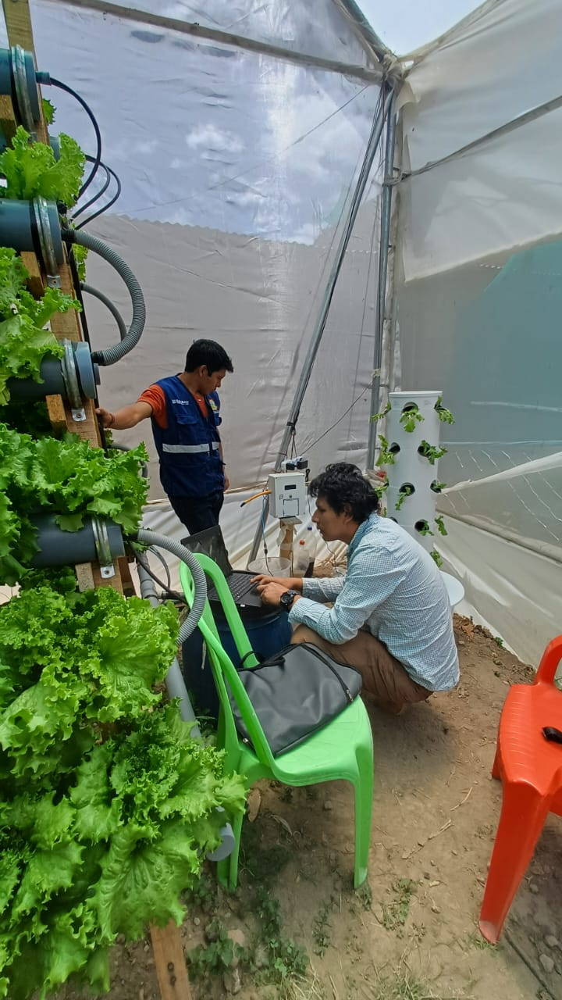

En este espacio te mostramos la innovación, tecnología, investigación y el impacto en el agro peruano (especialmente Ayacucho).
En Villa Automation SAC, impulsamos una nueva era de la agricultura inteligente en el Perú, desarrollando sistemas y robots que integran automatización, inteligencia artificial y control avanzado para optimizar cada etapa de la producción agrícola. Nuestra misión es modernizar el agro ayacuchano y nacional, reduciendo el esfuerzo humano, aumentando la eficiencia en el uso del agua y energía, y mejorando la productividad de los cultivos mediante soluciones tecnológicas adaptadas a cada entorno. Nuestro equipo de investigación y desarrollo ha diseñado el primer robot colaborativo agrícola de Ayacucho, capaz de:
Este robot se ha probado con éxito en invernaderos del distrito de San Juan Bautista (Ayacucho), demostrando su eficacia en cultivos de tomate y palta. Su estructura incorpora servomotores de alta precisión, sensores ultrasónicos, control PID/predictivo, y una plataforma solar que permite operación autónoma y sostenible (ver en la sección de robot colaborativos en la agricola).
Invernaderos Inteligentes
Villa Automation desarrolla sistemas de automatización de invernaderos, integrando: Sensores de humedad del suelo y del aire, temperatura y pH. Controladores electrónicos basados en microcontroladores Arduino y plataformas IoT. Actuadores automáticos para el control de bombas de riego, ventilación, nebulización y luz. Interfaces gráficas y monitoreo remoto, accesibles desde dispositivos móviles o computadoras. Estos sistemas permiten un control preciso de las variables ambientales, manteniendo las condiciones óptimas para el crecimiento de los cultivos. Se han implementado en proyectos de investigación con cultivos de fresas, hortalizas y sistemas hidropónicos, reduciendo el consumo de agua y aumentando la eficiencia energética.
Como parte de nuestro compromiso con la innovación, Villa Automation colabora activamente con universidades y centros de investigación, desarrollando proyectos en: Control predictivo y robótica colaborativa agrícola. Monitoreo ambiental avanzado con sensores de CO₂, humedad, temperatura y radiación. Automatización sostenible, integrando energía solar y tecnologías limpias. Simulación y modelado matemático de sistemas agrícolas con herramientas como Scilab, MATLAB y Python. Nuestros proyectos de I&D han sido publicados en revistas científicas como Revista Aypate (UNF), consolidando a Villa Automation como una empresa pionera en la automatización agrícola y aeroespacial del sur del Perú.
Impacto y Futuro
Con cada innovación, Villa Automation busca transformar la agricultura tradicional en una agricultura inteligente, eficiente y sostenible. Nuestros sistemas y robots agrícolas no solo optimizan recursos, sino que promueven el desarrollo tecnológico local, la independencia energética y la productividad del agricultor peruano. Villa Automation SAC continúa expandiendo su visión hacia un ecosistema de invernaderos inteligentes interconectados, robots agrícolas autónomos y sistemas de monitoreo ambiental, diseñados y fabricados íntegramente en Ayacucho.
? Volver a la página principal